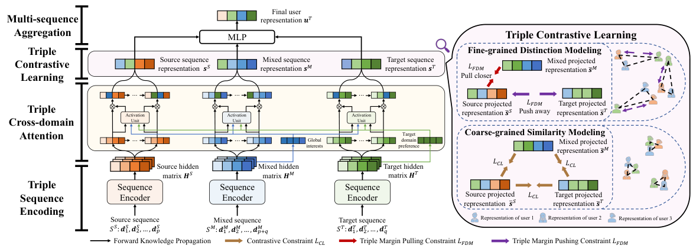

Triple Sequence Learning for Cross-domain Recommendation (面向跨域推荐的三重序列学习)
- 会议/期刊: TOIS 2024（投稿在审版，arXiv 2304.05027v2）
- 作者与机构: Haokai Ma、Lei Meng（山东大学软件学院）、Ruobing Xie、Xin Chen、Xu Zhang、Leyu Lin、Jie Zhou（腾讯微信）
- 推荐链路定位: 跨域序列精排（Next-Item 预测），可作为 model-agnostic 插件挂载于不同序列编码器
- 研究方向: 跨域与多场景推荐 / 序列与会话推荐
- 论文原文: https://arxiv.org/abs/2304.05027v2
- 开源代码: 暂未开源（原文声明接收后放出）
TL;DR (1分钟核心速览)
现有 CDR 只在"源域↔目标域"二元关系上做迁移，丢掉了把两域行为按时间戳拼接后天然形成的混合序列所蕴含的全局兴趣。Tri-CDR 用三个独立序列编码器同时建模源/目标/混合序列，以三重跨域注意力（TCA）筛选与目标偏好和全局兴趣相关的信息，再用三重对比学习（TCL）——粗粒度 InfoNCE 对齐 + 边际三元组区分——兼顾正迁移与信息多样性。在 Amazon、Douban 六个跨域设定上（Leave-one-out、99 负采样排序），NDCG@10 相对最优基线提升 1.2%–4.8%，且在 GRU4Rec/SASRec/CL4SRec 三种编码器下均稳定生效。
Background & Motivation (背景与核心矛盾)
- 主流范式: CDR/CDSR 主流做法是双域建模——映射函数（EMCDR/SSCDR）、显式跨域通路（CoNet/DASL）、多域全局图（DDGHM/C2DSR），统一目标是把源域知识搬到目标域缓解稀疏。
- 前人局限: ① 只建模
源→目标或全局→局部的二元关系，无法刻画用户跨域行为在时间轴上的真实跳转逻辑（如 book:AlphaGo → movie:AI → book:Transformers 这种跨域交替兴趣演化）；② 已有引入混合序列的工作（C2DSR/DDGHM）又常丢弃源域序列本身，或只做 inter-CL 互信息最大化，过度拉近导致表征塌缩与负迁移。 - 核心洞察 (Key Insight): 混合序列 \(S^M\)天然由\(S^S\)与\(S^T\)组成，因此三者的距离结构应满足"\(d(s_S,s_M)\)、\(d(s_T,s_M)\)小于\(d(s_S,s_T)\)"——这一序关系是先验可用的免费监督信号，而普通 InfoNCE 反而会破坏它。
- 本文切入点: 把"三元组"作为一等公民：序列层面三路编码，注意力层面三路交互筛选，损失层面"拉近 + 推开"双约束。
Method (核心方法设计)
1. 整体框架 (Overall Architecture)
对每个用户构造三条按时间排序的序列：源域 \(S^S\)、目标域\(S^T\)、混合序列\(S^M\)(长度\(p+q\)，两域行为按时间戳交织)。三条序列分别经三个同构但参数独立的序列编码器（默认 SASRec 自注意力）得到隐矩阵\(H^S,H^T,H^M\)；注意同 ID 物品在不同域使用不同 embedding，避免表征过度同质化。随后 TCA 以目标域末位隐状态\(h^T_q\)与混合域末位隐状态\(h^M_{p+q}\)为"查询锚点"，对三条序列分别做注意力聚合成\(s_S,s_T,s_M\)；三者拼接经两层 MLP 得用户表征\(u^T\)，与候选物品内积做 CTR 打分。训练时在 CTR 损失外并联 TCL 的 CSM 与 FDM 两项，并采用"单域预训练 + 跨域微调"两阶段策略稳定收敛。
flowchart TD
A["源序列 S^S / 目标序列 S^T / 混合序列 S^M"] --> B["三个独立 SASRec 序列编码器"]
B --> C["TCA 三重跨域注意力聚合"]
C --> D["拼接 + MLP 聚合得到 u^T"]
D --> E["内积打分 + BCE 损失"]
C --> F["TCL：CSM 对齐 + FDM 边际区分"]
2. 关键设计拆解 (Key Designs)
- 三重跨域注意力 TCA（把"筛知识"变成注意力权重）：痛点是不加区分的源/混合序列会带来负迁移，而直接用候选物品 embedding 做 query 在线上要为每个候选算一遍。TCA 改用目标域当前偏好 \(h^T_q\)与全局兴趣\(h^M_{p+q}\)共同作锚点，对第\(i\) 个源域行为： \(\alpha^S_i=\mathrm{MLP}_a\big(h^T_q\,\|\,h^S_i\,\|\,h^S_i-h^T_q\,\|\,h^S_i\odot h^T_q\,\|\,h^M_{p+q}\big),\quad s_S=\sum_i \mathrm{Softmax}(\alpha^S_i)\,h^S_i\)。 差值项与点积项显式刻画"该行为与目标偏好的一致/冲突程度"，因此对齐与冲突知识可被分开加权；用上一步隐状态而非候选物品做 query，使在线打分只需一次前向（与候选数解耦）。
- 三重对比学习 TCL（粗对齐 + 细区分）：CSM 在三个投影子空间上对 \((\bar s_M,\bar s_S)\)、\((\bar s_M,\bar s_T)\)、\((\bar s_S,\bar s_T)\) 三对正例各做 InfoNCE，把同用户跨域表征从"按域聚类"拉成"按用户聚类"。但单调拉近会让源/混合序列对目标序列不再提供增量信息，故 FDM 用边际三元组约束距离序： \(\mathcal{L}_{FDM}=\sum_u \max\{d(\bar s_S,\bar s_M)-d(\bar s_S,\bar s_T)+\gamma,\,0\}\)。 该式只要求"源-混合更近、源-目标更远"，天然保留域间差异（\(L_2\)距离，\(\gamma\) 按数据密度域内取值）。
- 训练目标、负采样与推理开销：总损失 \(\mathcal{L}=\mathcal{L}_{CTR}+\lambda_{CSM}\mathcal{L}_{CSM}+\lambda_{FDM}\mathcal{L}_{FDM}\)，\(\mathcal{L}_{CTR}\)为 BCE，负样本为训练集内随机负采样（CSM 的负例即 batch 内其他用户，in-batch）。TCL 只在训练期生效，推理时无额外开销；时间/空间复杂度与 CL4SRec 同阶\(O((L^2+L+B)d|U|)\)，仅多出三个编码器与少量 MLP 参数。
Experimental Setup & Evaluation Protocol (实验设置与评估协议)
- 数据集与预处理: 保留双域均有行为的用户，过滤行为数 < 3 的用户，全部评分记录视为隐式交互。
| 数据集 | #Users | #Items | #Interactions | 稀疏度/密度 | 特征/场景说明 |
|---|---|---|---|---|---|
| Amazon Toy | 7,996 | 37,868 | 114,487 | 0.0378% | 与 Game 构成双向对 |
| Amazon Game | 7,996 | 11,735 | 82,871 | 0.0883% | 较稠密，作源域更优 |
| Amazon Book | 28,531 | 239,042 | 625,692 | 0.0092% | 极稀疏，与 Movie 配对 |
| Amazon Movie | 28,531 | 38,185 | 349,918 | 0.0321% | 稠密域 |
| Douban Book | 4,580 | 64,340 | 224,117 | 0.0761% | 平均交互 48.93 |
| Douban Music | 4,580 | 57,586 | 278,855 | 0.1057% | 平均交互 60.89 |
- 数据划分与防穿越 (Splitting Strategy):
Leave-One-Out——每位用户最后一条交互作测试、倒数第二条作验证，序列按时间戳升序构造，混合序列由两域行为合并后重排序，严格无未来信息泄漏。 - 排名评测协议 (Ranking Protocol):
Sampled Ranking——测试阶段为每个正例随机采 99 个负例（1:99），报告 NDCG@{5,10,20,50}、HR@{5,10,20,50} 与 AUC；非 Full-Ranking，绝对数值偏乐观。 - 对比基线与超参设置: 单域 GRU4Rec / SASRec / CL4SRec；跨域 SASRec(S+T)、DTCDR+、DDTCDR+、DASL+、C2DSR+（"+ "表示统一换成 SASRec 编码器以保证公平）；\(d=64\)、batch 120、最大序列长 200、lr 5e-4、\(\tau=0.1\)，\(\lambda_{CSM},\lambda_{FDM}\in\{0.1,0.5,1,4,10\}\)，\(\gamma\)按域密度取 0.05–4.0；5 次随机种子取均值，配对 t 检验\(p<0.05\)。
Key Experimental Results (实验关键数据)
1. 主实验对比 (Main Results)
| 数据集 | 指标 | GRU4Rec | SASRec | CL4SRec | SASRec(S+T) | DASL+ | C2DSR+ | Tri-CDR | Improv. |
|---|---|---|---|---|---|---|---|---|---|
| Game→Toy | N@10 | 0.1551 | 0.2097 | 0.2143 | 0.2189 | 0.2206 | 0.2213 | 0.2312 | +4.5% |
| Game→Toy | HR@10 | 0.2624 | 0.3260 | 0.3338 | 0.3355 | 0.3338 | 0.3442 | 0.3548 | +3.1% |
| Toy→Game | N@10 | 0.3053 | 0.3673 | 0.3687 | 0.3803 | 0.3734 | 0.3691 | 0.3892 | +2.3% |
| Toy→Game | HR@10 | 0.4839 | 0.5546 | 0.5579 | 0.5702 | 0.5613 | 0.5704 | 0.5854 | +2.6% |
| Movie→Book | N@10 | 0.2695 | 0.3160 | 0.3340 | 0.3285 | 0.3346 | 0.3359 | 0.3519 | +4.8% |
| Movie→Book | HR@10 | 0.4173 | 0.4728 | 0.4937 | 0.4874 | 0.4933 | 0.4966 | 0.5182 | +4.3% |
| Book→Movie | N@10 | 0.4477 | 0.4843 | 0.4930 | 0.4944 | 0.4939 | 0.4945 | 0.5015 | +1.4% |
| Book→Movie | HR@10 | 0.6432 | 0.6795 | 0.6897 | 0.6913 | 0.6899 | 0.6973 | 0.6999 | +0.4% |
| Book→Music | N@10 | 0.5338 | 0.5973 | 0.5815 | 0.6062 | 0.6089 | 0.6101 | 0.6177 | +1.2% |
| Book→Music | HR@10 | 0.7258 | 0.7818 | 0.7761 | 0.7913 | 0.7936 | 0.7949 | 0.8019 | +0.9% |
| Music→Book | N@10 | 0.4944 | 0.5632 | 0.5514 | 0.5813 | 0.5806 | 0.5823 | 0.5924 | +1.7% |
| Music→Book | HR@10 | 0.6746 | 0.7414 | 0.7386 | 0.7598 | 0.7602 | 0.7641 | 0.7737 | +1.3% |
2. 消融实验 (Ablation Study)
| 变体 (SASRec 编码器) | Game→Toy N@10 / HR@10 | Toy→Game N@10 / HR@10 | Movie→Book N@10 / HR@10 | Book→Movie N@10 / HR@10 | Book→Music N@10 / HR@10 | Music→Book N@10 / HR@10 |
|---|---|---|---|---|---|---|
| w/o TCA & TCL | 0.2239 / 0.3446 | 0.3636 / 0.5578 | 0.3279 / 0.4866 | 0.4754 / 0.6860 | 0.6092 / 0.7970 | 0.5833 / 0.7649 |
| w/o TCA | 0.2274 / 0.3522 | 0.3871 / 0.5816 | 0.3399 / 0.4967 | 0.4953 / 0.6902 | 0.6160 / 0.7997 | 0.5881 / 0.7693 |
| w/o FDM (仅 CSM) | 0.2280 / 0.3530 | 0.3861 / 0.5837 | 0.3415 / 0.5057 | 0.4858 / 0.6916 | 0.6138 / 0.8014 | 0.5902 / 0.7728 |
| Tri-CDR 完整 | 0.2312 / 0.3548 | 0.3892 / 0.5854 | 0.3519 / 0.5182 | 0.5015 / 0.6999 | 0.6177 / 0.8019 | 0.5924 / 0.7737 |
3. 关键实验发现 (Key Findings)
- 混合序列本身就是最强单路信号，但"无脑三路拼接"会反噬：单域基线中 SASRec(M)（只用混合序列）在 Game→Toy 上 N@10 已达 0.2200，远超 SASRec(T) 的 0.2097，说明跨域交替兴趣确有增益；然而朴素拼接的 SASRec(S+T+M) 在 Book→Movie 上 N@10 反而跌到 0.4814（低于 SASRec(S+T) 的 0.4944），印证源/混合序列同时携带噪声——这正是 TCA+TCL 把该设定拉回 0.5015 的价值来源。
- TCL 与 TCA 互补，FDM 是抗塌缩的关键：去掉 TCA&TCL 后 Movie→Book 的 HR@10 仅 0.4866，恢复 TCA 得 0.4967，恢复 TCL 得 0.5057，两者叠加到 0.5182；单独消去 FDM 平均损失 1.60% NDCG@10 / 0.78% HR@10，且在 Book→Movie 上掉幅最大（0.5015→0.4858），说明仅靠 InfoNCE 对齐会让源/混合序列对目标域"无话可说"。
- 稀疏目标域才是主战场，且 FDM 提升了对权重的鲁棒性：Game→Toy、Movie→Book 两个稀疏目标域提升最大（N@10 +4.5%/+4.8%），而稠密域 Book→Movie 仅 +1.4%；在 CSM 权重比从 1:1:1 恶化到 1000:1:1 时，无 FDM 版本 N@10 从 0.2312 掉到 0.2244，带 FDM 版本仍保持 0.2312 附近，平均优势 1.17%（NDCG@10），显著降低调参成本。
Highlights & Limitations (亮点、对比与审稿批判)
- 与代表作对比 (vs. Prior Work): 相较 DASL（双注意力、双域独立/共享偏好）与 DDTCDR（正交映射双迁移），Tri-CDR 把建模单元从"两序列"扩到"三序列"，显式引入混合序列作为全局兴趣载体；相较 C2DSR（图 + inter-domain infomax），本文指出纯互信息最大化会产生"过度同质"的负迁移，并用 margin 三元组把"区分度"写进目标函数，这是最本质的差异。
- 可迁移亮点: ① "组合序列由子序列构成 ⇒ 距离序应满足 \(d(S,M)<d(S,T)\)"这一先验，可零成本迁移到多行为/多场景/多模态融合的任何多路表征对齐任务；② 用"上一步隐状态 + 全局末位状态"替代候选物品 embedding 做注意力 query，把注意力计算从\(O(|\mathcal{I}|)\)降到\(O(1)\)，是线上可落地的工程技巧。
- 审稿级局限批判: ① 评测采用 1:99 负采样排序而非 Full-Ranking，稠密域（Douban）上的 1% 级提升在无偏全库排序下能否保持存疑，且未报告方差/置信区间；② 三套独立编码器 + 三条序列使训练显存与预训练成本约三倍于单域 SASRec，论文只给了渐近复杂度而未给实测吞吐/延迟；③ 混合序列在时间上跨域交织，若两域时间戳语义不一致（如评分时间 vs 播放时间），构造本身可能引入伪序关系，文中未讨论该鲁棒性。
Rating (四维评分)
- 方法创新性 (Novelty): ⭐⭐⭐⭐ （"三序列 + 距离序先验"视角新颖，TCA 的差值/点积交互项与 FDM 的 margin 约束均有清晰物理直觉，但组件本身（InfoNCE、三元组损失、跨域注意力）均为已有积木的重组）
- 评估协议与实验扎实度 (Protocol & Experiments): ⭐⭐⭐⭐ （6 个跨域设定 × 3 种编码器的通用性验证与 5 种子 t 检验较扎实，但仅用 1:99 采样排序、缺少全库排序与线上 A/B，稀疏分桶分析也偏薄）
- 写作与数学规范度 (Clarity & Rigor): ⭐⭐⭐⭐ （公式与符号定义完整、复杂度与三类基线对比表清晰；\(\lambda_1{:}\lambda_2{:}\lambda_3\) 按域密度手工设 100:1:1/1000:1:1，超参启发式色彩较重）
- 工业落地与复现价值 (Industrial & Practical Value): ⭐⭐⭐⭐ （model-agnostic 可插拔、推理期无 TCL 开销、注意力与候选数解耦，工程友好；但代码尚未开源、三编码器训练成本需实测评估）